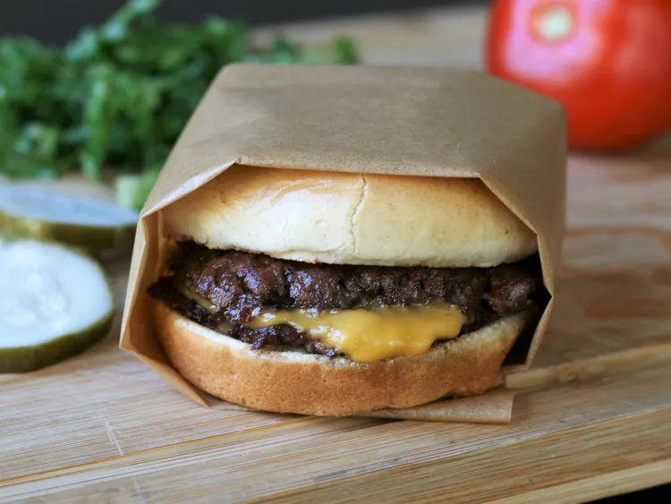

Smash Burgers

This smash burger recipe makes super juicy burgers
with crispy edges. Don't use meat that is leaner
than 80/20 for best results, and make sure the meat is very cold.
I prefer to cook these outdoors to avoid smoking up the kitchen.
These grill up very fast because of the high heat,
so make sure you have everything ready to go!
ingredients
- 4 hamburger buns
- 2 tablespoons butter, softened, or as needed
- 1 pound ground chuck beef (80% lean)
- 4 6-inch squares parchment paper
- salt to taste
- 4 slices American cheese
- burger toppings of choice
Method
- Preheat an outdoor grill for high heat and lightly oil the grate
- Spread butter on the inside of the buns and toast on the flat-top until lightly browned.
- Form meat into 8 loosely-packed balls
- Grill for about 45 seconds, until the edges are dark.